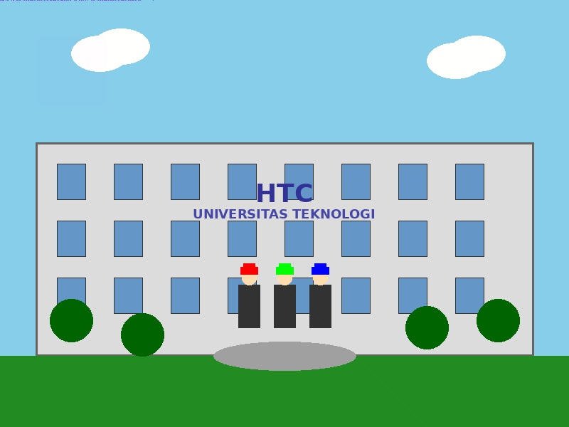

Setelah sukses dengan challenge forensik pertama, Anda dipromosikan menjadi Senior Digital Forensic Investigator di tim cybersecurity HTC! 🎉
Kasus baru tiba: Seorang mahasiswa mengirim foto wisuda melalui email, namun sistem AI security kampus mendeteksi anomali pada file tersebut. Analisis awal menunjukkan:
- 📁 Ukuran file: 2.1MB (sangat besar untuk foto biasa)
- 🔍 Metadata: Mengandung string mencurigakan
- 📊 Histogram: Distribusi pixel tidak normal
- 🎯 Kecurigaan: Multi-layer steganography dengan teknik berbeda
🎯 Misi Advanced: Temukan semua 4 pesan tersembunyi menggunakan teknik forensik yang berbeda!
📸 Foto Wisuda Normal
htc-forensic-002-wisuda-small.jpg
Versi kecil untuk preview (500KB)
📸 Foto Wisuda Mencurigakan
htc-forensic-002-wisuda.jpg
Versi penuh untuk analisis (2.1MB)
⚠️ Advanced Challenge Warning
Ini adalah challenge tingkat menengah dengan 4 teknik steganografi berbeda!
Direkomendasikan selesaikan HTC-FORENSIC-001 terlebih dahulu untuk memahami dasar-dasarnya.
Estimasi waktu: 45-90 menit untuk investigator berpengalaman.
Challenge ini menggunakan 4 teknik steganografi berbeda yang harus ditemukan secara berurutan:
📋 Progress Tracker
Gunakan checklist ini untuk melacak progress investigasi:
Untuk menyelesaikan challenge ini, Anda harus menemukan:
- ✅ Visual Message: Konfirmasi teks di Blue plane 0
- ✅ Geometric Pattern: Symbol/bentuk di Green plane 2
- ✅ Main Flag: HTC{multi_layer_stego_master_2024}
- ✅ Secondary Validation: Pesan konfirmasi dari Green MSB
🌟 Bonus Scoring System:
- Perfect Score (300 pts): Semua 4 pesan ditemukan tanpa hint
- Expert (270 pts): Menggunakan maksimal 2 hint
- Advanced (240 pts): Menggunakan maksimal 4 hint
- Intermediate (200 pts): Semua hint digunakan
🎖️ Special Achievements:
- 🚀 Speed Demon: +50 pts (selesai < 30 menit)
- 📝 Documentation Master: +25 pts (laporan lengkap)
- 🧠 Creative Solution: +25 pts (menggunakan tools tambahan)
📥 Challenge Files
File utama untuk analisis forensik:
📸 Download Full Image (2.1MB){kind=link}
File lengkap dengan semua layer tersembunyi
🔧 Analysis Tools
Tools yang direkomendasikan:
☕ Stegsolve.jarTool utama untuk steganografi analysis
📋 Write-up Template
Template laporan forensik:
📝 Report TemplateFormat profesional untuk dokumentasi
Main Flag: HTC{multi_layer_stego_master_2024}
Cara Submit:
- Ekstrak flag utama dari Red channel LSB
- Verifikasi dengan menemukan semua 4 pesan tersembunyi
- Submit flag di portal utama HTC CyberSec Academy
- Upload write-up (opsional) untuk bonus points
💡 Pro Tips:
- Screenshot setiap temuan untuk dokumentasi
- Catat settings/parameters yang digunakan
- Bandingkan dengan teknik di challenge HTC-FORENSIC-001
- Diskusikan dengan teman untuk collaborative learning